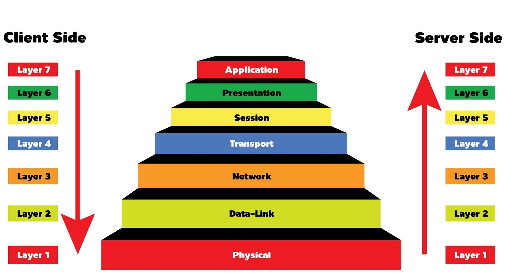

Establishing a "Defense in Depth" strategy. Modern web applications require layered technical controls to protect against complex external threats and internal vulnerabilities.
Defense in Depth: Creating multiple layers of security so if one fails, others protect the system.
Perimeter Defense: Filtering malicious requests before they reach the server (WAF).
Data Sovereignty: Ensuring information is unreadable without authorization (Encryption).
WAF Control
Web application firewalls (WAFs) are the first line of defense at the application layer. They provide visibility into application data at the HTTP Application Layer (Layer 7).

[ FIG 1.2: OSI Reference Model - WAF operates at Layer 7 ]
L7 Application: Direct interaction with software (HTTP/FTP). Where WAF lives.
L6 Presentation: Data translation, encryption, and compression.
L5 Session: Manages connections and conversations between devices.
L4 Transport: End-to-end communication (TCP/UDP). Standard firewalls live here.
L2 Data Link: Physical addressing (MAC) and frame management.
L1 Physical: Raw bitstream transmission over hardware (Cables/Wi-Fi).
[DETECTED] GET /admin?id=1' OR '1'='1
[ACTION] 403 Forbidden - SQL Injection block.
Data Encryption
The science of Cryptography translates plaintext into unreadable ciphertext. In modern IS, we must distinguish between reversible encryption and one-way hashing.
Feature
Hashing (One-Way)
Encryption (Two-Way)
Primary Goal
Data Integrity
Confidentiality
Reversibility
Impossible
Required (with Key)
Use Case
Passwords / Digital Signatures
Private Messaging / File Storage
Symmetric Encryption: Single secret key for both lock/unlock. Extremely fast for bulk data.
Asymmetric Encryption: Uses a Public Key to encrypt and a Private Key to decrypt.
Salted Hashing: Adding random data to passwords before hashing to defeat "Rainbow Table" attacks.
3. PERMISSIONS Granular rights (Read, Write, Execute) on specific resources.
Rule: Users receive permissions only through their assigned roles.
Principle of Least Privilege: Limiting a user's "Blast Radius" by granting only essential permissions.
Role Hierarchy: Inheriting permissions (e.g., a "Manager" role inherits all "Staff" permissions).
Separation of Duties: Requiring different roles for critical tasks to prevent internal fraud.
[AUTH_CHECK] User: John_Doe | Requested Action: DELETE_DATABASE
[LOOKUP] User 'John_Doe' belongs to Role: 'Analyst'
[POLICY] Role 'Analyst' Permission: [READ_ONLY]
[RESULT] ACCESS DENIED. (PoLP enforced)
Authentication (MFA)
Multi-Factor Authentication (MFA) is the process of verifying a user's identity through two or more independent categories of credentials. It is the strongest defense against compromised passwords.
1. KNOWLEDGE (Something you Know):
Static Passwords: The most common but vulnerable factor.
Passphrases: High entropy strings (e.g., "correct-horse-battery-staple") which are harder for bots to crack.
PINs: Specific numeric identifiers.
2. POSSESSION (Something you Have):
Physical tokens, Smartphones (TOTP apps), or Hardware Security Keys (YubiKey).
3. INHERENCE (Something you Are):
Biological traits: Fingerprints, Iris scans, and Facial geometry.
The Golden Rule: Factors must come from different categories. Password + Security Question is NOT true MFA.
TOTP Logic: Time-based One Time Passwords expire every 30-60 seconds, neutralizing stolen credentials.
Adaptive MFA: Triggering extra challenges based on Location (Geo-fencing) or Time-of-access.
[LOGIN_ATTEMPT] User: Admin | IP: 103.45.XX.XX
[THREAT_INTEL] IP flagged for Credential Stuffing.
[ACTION] Knowledge Factor Accepted. Triggering mandatory Inherence Check...
[MFA] Awaiting Biometric confirmation on mobile device.
Transport Layer (HTTPS)
HTTPS (HTTP Secure) is the standard for encrypted communication. It relies on TLS (Transport Layer Security) to provide a secure channel over an insecure network.
1. ENCRYPTION (Privacy): Scrambles data to prevent eavesdropping. Even if packets are intercepted, they are unreadable without the session key.
2. DATA INTEGRITY (Accuracy): Uses digital "seals" (MACs) to ensure data isn't modified or tampered with during transit.
3. AUTHENTICATION (Trust): Validates the website's identity via SSL Certificates signed by trusted Certificate Authorities (CAs).
The Handshake: A negotiation phase where the client and server agree on encryption algorithms and keys.
Asymmetric Start: Uses Public/Private keys to securely exchange a "Session Key."
Symmetric Finish: Once established, the "Session Key" is used for fast, bulk data encryption.